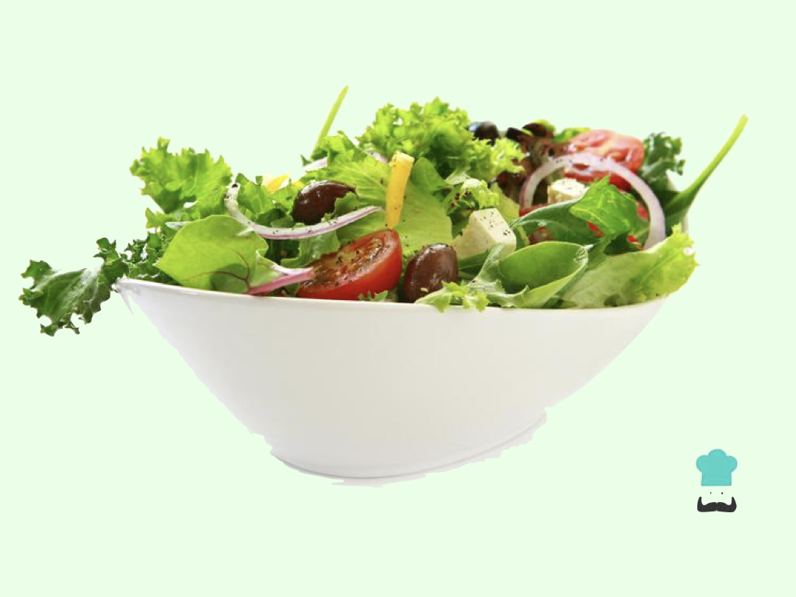

Receta: Ensada Verde

Ingredientes
Los ingredientes necesarios para preparar la ensalada son los siguientes:
- Cebolla
- Limón
- Queso Feta
- Aceitunas
- Lechuga
- Pimentón amarillo
- Tomate Cherry
Preparación
Se pican todos los ingredientes, se mezclan y listo!
Pasos a seguir
Pasos a seguir para preparar la ensalada verde
- Cortar la cebolla en rodajas
- Cortar el tomate cherry por mitades
- Cortar la lechuga en julianas o pequeños trozos
- Cortar el pimentón amarillo en julianas
- Colocar los vegetales recien cortados en un bowl o contenedor y aplicar limón
- Cortar en queso feta en pequeños pedazos
- Agregar aceitunas a su preferencia
- Mezclar todo muy bien